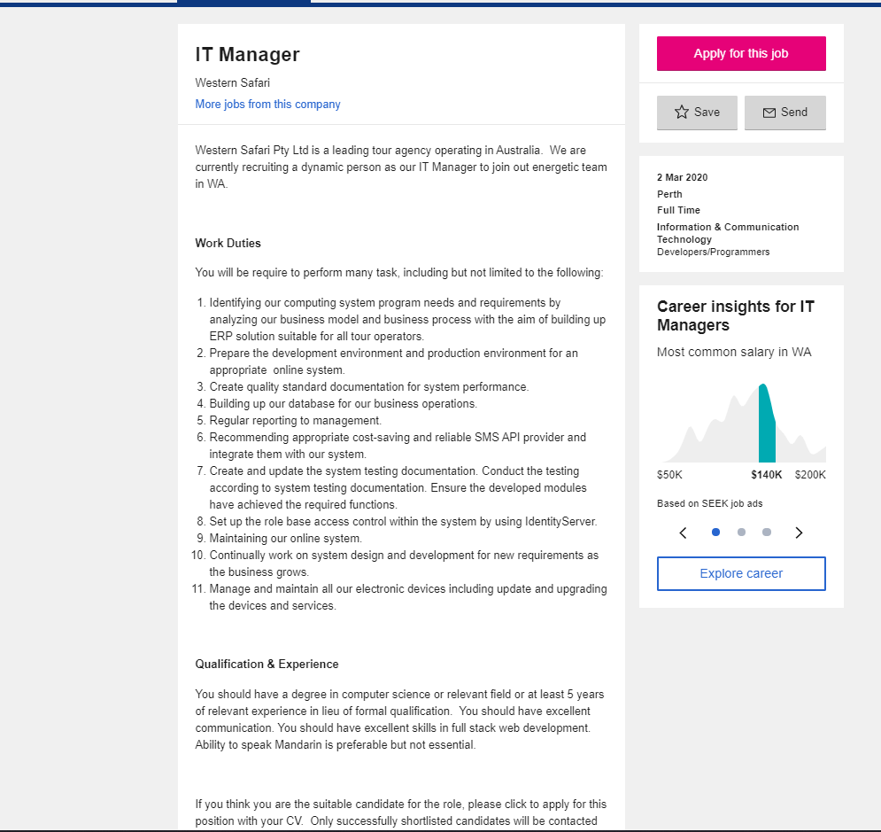

Jamie Hayes
- Phone Number: 0475417942
- Student Email: s3859158@student.rmit.edu.au
- Student ID: s3859158
Personal Infomation
My name is Jamie Hayes and I am 24-year-old male, I am currently living in Perth Western Australia and I was born in Australia. I have completed year 12 and have completed a certificate III in Telecommunications. I have just recently left the Telecommunications Industry as I am looking at starting a career in Information Technology.
My hobbies include…
-Playing Paintball at my local Paintball club
-I enjoy playing a wide variety of PC games
-I am a huge Japanese car enthusiast and I currently own a 2002 Subaru Impreza WRX STI that I am working on over weekends
Interest In IT
My initial interests in Information Technology sparked when I was in Computer Science in year 10 at my high school. My teacher was previously a software engineer/IT manager for most of his life before he became a teacher and taught Computer Science. It was my most favorite class at school as he would not hold back. He would teach us about issues as Network Security, Server Setups, the importance of Server Backup and how hardware worked right down to the finest details. I was really interested as at home I had my own computer and my friends where all into computers and servers. We made our first Minecraft server when I was 16 which at the time, we thought was amazing. It was hosted on my friend’s PC that he made specifically for the server. When I was in year 11-12, I did work experience at a fairly large company in the IT department helping the server admin and his assistant with help desk, server back up and account creation. I found it so exciting as it was where I felt like I belonged. Helping an employee with a problem with their account or helping the IT manager fix a broken printer or repair windows on a laptop, made me feel like I was a part of something big and the backbone of a company’s IT solutions.
I chose to come to RMIT after I left the telecommunications Industry of 8 years. I needed a career change and I thought back on how I loved IT so much when I was younger and felt like it was something I wanted to do as a career and in my future. I looked up reviews and decided to enroll with RMIT. I have loved the staff so far and the online setup is perfect. I am currently enrolled in online studies and also enrolled in Introduction to Programming which am I also excited to pursue. I plan to enroll in the Bachelor of Information Technology in the near future after completing both Introduction to Information Technology and Introduction To Programming.
I have learnt a lot so far, such as designing this website, how to work as a team, how to talk and present information professionally in a work environment. I expect to learn more as time progresses and we learn more about the world of IT and what it does for us. I am extremely excited to learn about Artificial intelligence and the impacts both positive and negative it can and will have on our world, as it is a topic, I have had some interest in for a while now.
Ideal Job
My Idea Job in the future would be an IT Manager
This is a IT Manager position on seek.com
The above snip and link of the seek job advertisement would be my ideal job in the following years. In my own description, an IT Manager would Supervise and overlook the supply, distribution, maintenance and security of all electronic systems that are within the business and any mobile equipment that would be implanted in the field.
The manager would have to also write and update supporting documentation for these products and also maintain an accessible database on all the documentation on a server. I also believe the job would include managing data servers and helping employees with their IT solutions through out the company.
Personally, I receive satisfaction out of fixing and upgrading the IT aspects in my life and I love to find ways to make these aspects better and work the way they are designed for. And having a career in something that I can focus on completely and love my job is very important to me as an enthusiast of the Information Technology world. It has been a goal of mine for a very long time, since leaving school to become an IT manager. Obviously, I will have to have a few years of experience. Ideally, I would picture myself starting out in an IT help desk working with employees or customers helping them with problems with software, hardware and mobile devices and work my way up to either an IT administers assistant or manager a small companies IT solution.
I also am confident in previously completing a certificate in Information Cert II will also help me along the way and my outside/unofficial knowledge of computers, hardware and software will also add to my work environment and in my opinion, you can never stop learning. I am excited because I know that in the IT world you are always learning, beginner or experienced there is always going to be something you can learn that you didn’t know beforehand that will help you in your work life as well as personal life.
I acknowledge that you also need to complete a degree in Information Technology or even Computer Science and also have many years’ experience in the field. I think also bringing or leaving a link or presentation on previous projects that you have completed in the past will also help your chances of being employed when it comes to the job interview.